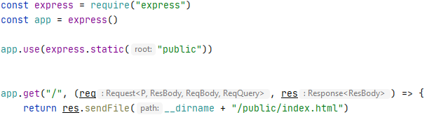
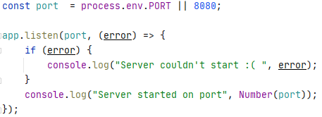

Backend basics
Node.js er en teknologi som er bygget på Chromes V8 JavaScript engine.
Node.js tillader udviklere at launche både frontend og backend når man udvikler web apps med JavaScript.
- Push - tilføjer ny værdi til sidst i array
- Pop - sletter sidste værdi i array
- Functions
Functions er objekter der kan blive manipuleret med. Extended og sendt rundt som data. En function ville normalt se ud som:
function functionName() {
// function body
// optional return;
}
alle funtioner retunerer en værdi
- Callbacks
En call er en function som sættes i en andens function parameter og bliver eksekvere i den pågældende function.
Bruges ofes i asynchronous programmering.
Man bruger callbacks når man f.eks. lavet et API call. Mange requests uden at skulle vente på en function retunerer en værdi.
- npm
Node Package Manager - et online repository
- Express
Express er et hurtigt framework som bruges af Node.js


Go to index